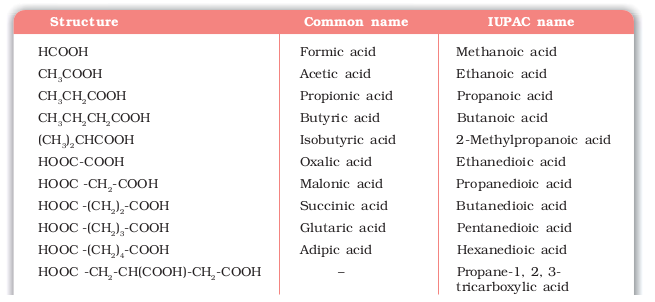
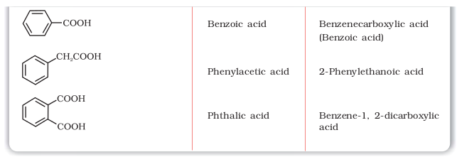
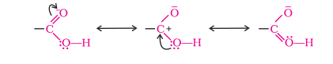

Since carboxylic acids are amongst the earliest organic compounds to be isolated from nature, a large number of them are known by their common names. The common names end with the suffix –ic acid and have been derived from Latin or Greek names of their natural sources. For example, formic acid (HCOOH) was first obtained from red ants (Latin: formica means ant), acetic acid (CH3COOH) from vinegar (Latin: acetum, means vinegar), butyric acid (CH3CH2CH2COOH) from rancid butter (Latin: butyrum, means butter).
In the IUPAC system, aliphatic carboxylic acids are named by replacing the ending –e in the name of the corresponding alkane with – oic acid. In numbering the carbon chain, the carboxylic carbon is numbered one. For naming compounds containing more than one carboxyl group, the ending –e of the alkane is retained. The number of carboxyl groups are indicated by adding the multiplicative prefix, di, tri, etc. to the term oic. The position of –COOH groups are indicated by the arabic numeral before the multiplicative prefix. Some of the carboxylic acids along with their common and IUPAC names are listed in Table 12.3.
Table 12.3 Names and Structures of Some Carboxylic Acids

In carboxylic acids, the bonds to the carboxyl carbon lie in one plane and are separated by about 120°. The carboxylic carbon is less electrophilic than carbonyl carbon because of the possible resonance structure shown below:
